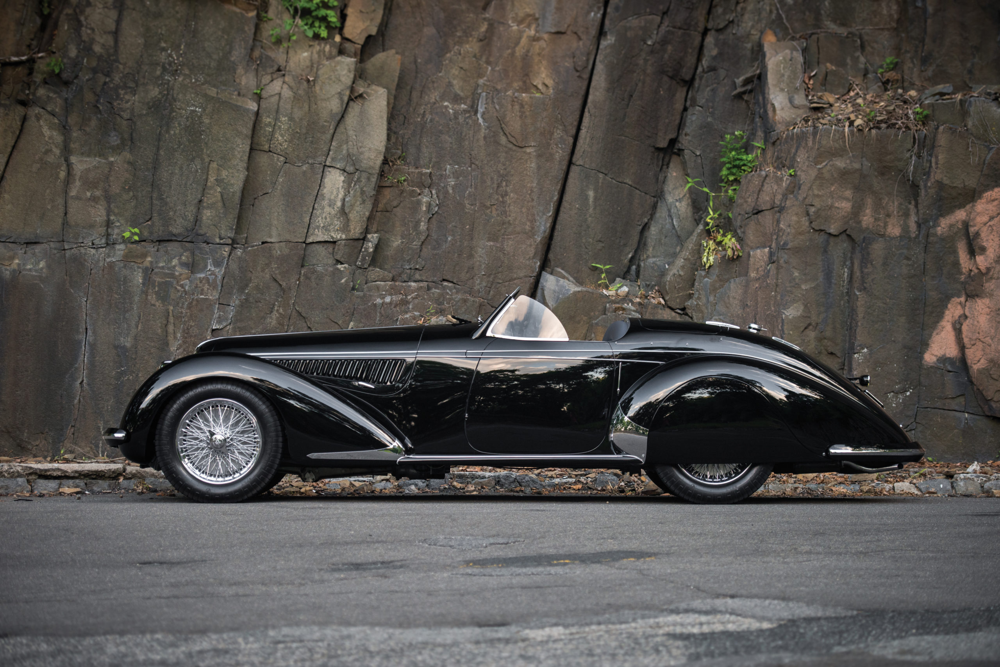

Alfa Romeo
8C 2900 Lungo Spider Touring

19 800 000$
The current world record was set during Pebble Beach
week in 2016. The car in question is one of twelve Alfa Romeo 8C 2900 Lungo Spiders by Touring from
1939. After a somewhat troubled history (exported to South America in the 1950s without a body and
later with its engine replaced by a Chevy V8) in 1997 it ended up in the hands of none other than
Sam & Emily Mann – the collectors who have won no less than four Best of Show awards at Pebble Beach
– who commissioned the restoration and reunited the chassis, engine and bodywork once again. The car
was debuted at the 1999 Pebble Beach Concours d’Elegance (where it was awarded 2nd in Class), and
after the competition is was not relegated to the garage but continued to be used on numerous tours
and rallies. In August 2016, the car was offered for sale by RM in Monterey, where, against an
estimate of $20,000,000 to 25,000,000, it was sold for $19,800,000, at the time a world record for
any pre-war car.